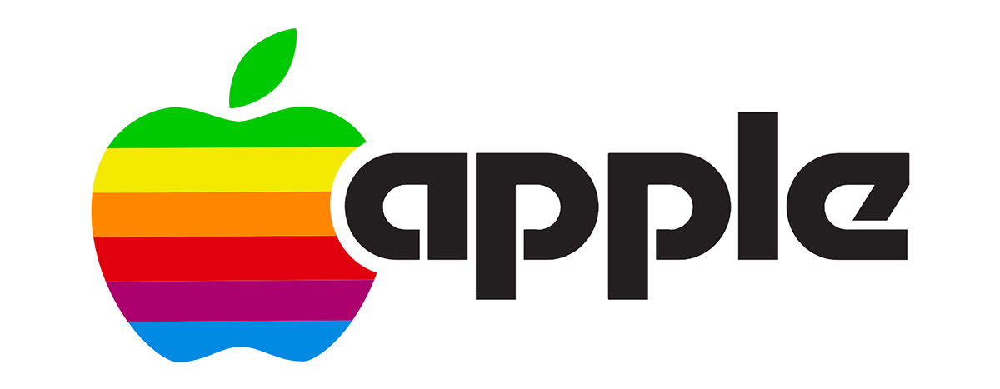
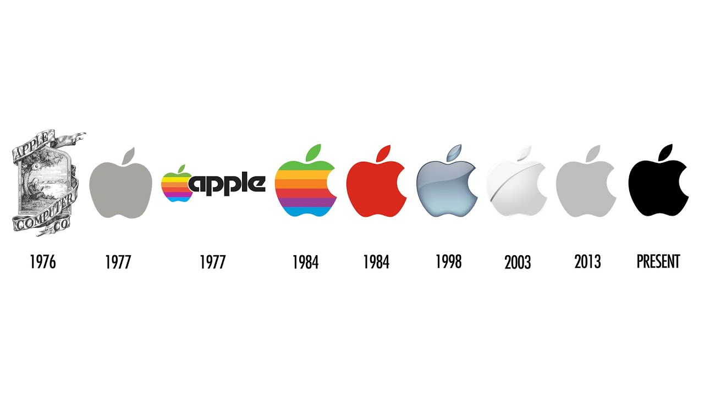

Logo da Apple
O primeiro logo da Apple foi criado em 1976 por dois dos fundadores da marca, Steve Jobs e Ronald Wayne, e foi inspirado em uma frase de Wordsworth. Criado com nanquim, a ilustração em preto e branco mostrava o autor, matemático, físico, astrônomo e teólogo Isaac Newton sentado embaixo de uma macieira. Dentro da moldura da imagem havia o texto do poeta inglês “Newton… uma mente para sempre viajando nos estranhos mares do pensamento”. O nome inaugural da companhia, “Apple Computer Co.”, envolto ao redor no topo e abaixo em um banner em formato de fita.
Uma Nova Ideia
No ano seguinte, Steve Jobs contratou o designer Rob Janoff , um Diretor de Arte na Regis McKenna e reconhecido por seu trabalho de design e publicidade empresarial, para criar um novo logo para a startup. Jobs acreditava que o antigo logo era obsoleto e era difícil de reproduzi-lo em tamanhos menores. A única instrução que Janoff recebeu de jobs foi que não “ficasse bonitinho”. Janoff estudou maçãs reais com mordidas em todos os ângulos possíveis. A mordida na maçã do logo da Apple foi originalmente implantada para que as pessoas não confundissem a maçã com um tomate cereja.
Surge uma Piada que deu certo
Um colega de Janoff revelou que aquela mordida (bite) representava “bytes”, a fundação da computação.O trocadilho nerd (bite/byte) foi uma referência incrível para a companhia de tecnologia e a coincidência feliz do design apenas contribuiu para que seja uma marca memorável. Janoff criou duas versões do logo para apresentar; uma das versões incluía a mordida e a outra não. O logo foi visto com listras, como uma cor sólida e uma mação metálica. A versão colorida, apelidada de maçã arco-íris foi a escolhida. Uma forte e moderna fonte sans-serif acompanhava o gráfico da maçã. O próprio designer declarou que não havia nenhuma razão por trás da escolha das cores, mas percebeu que Jobs queria que o verde ficasse no topo “porque era aonde a folha estava”.A forma da maçã por sí só não tinha nenhuma relação com computadores. IÉ para que as pessoas percebam que um computador Apple não era apenas um pedaço pontudo de metal sem espaço em seu lar que uma criança não iria querer chegar perto. Diferentes frutas possuem caule, são levemente circulares e com uma folha pendurada. Então a mordida na maçã inicialmente indicava que era realmente uma maçã e não outra coisa. Metaforicamente a mordida indicava mordendo a tecnologia e o novo conhecimento que os usuários obteriam com um computador.  "Engraçado que, após eu criar isso com meu diretor criativo, Chip, ele falou “;h sabe o quê, Rob? Você acabou de criar algo que você nem percebeu. A palavra ‘byte’ é uma palavra de informática. E você fez uma mordida (bite) na Apple (maçã)’. Eu não sabia o suficiente de computadores para perceber aquilo e eu fiquei tipo, tem um pouco de engenhosidade que irá durar! Qualquer logo que faz piada engaja e faz com que você se lembre! E as cores do arco-íris tinham a ver com USP desse produto. O computador Apple era o único que conseguia reproduzir cores".